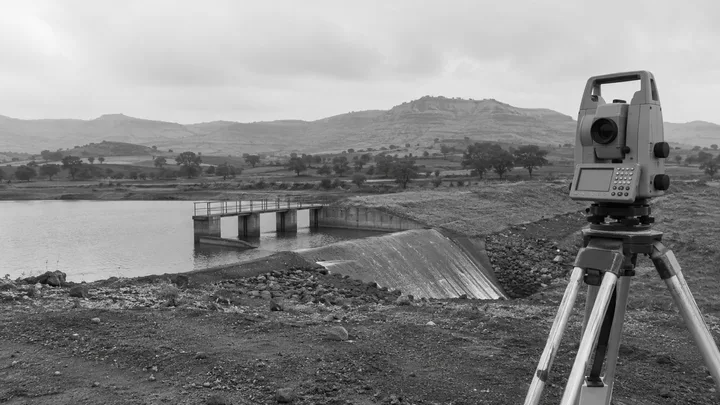
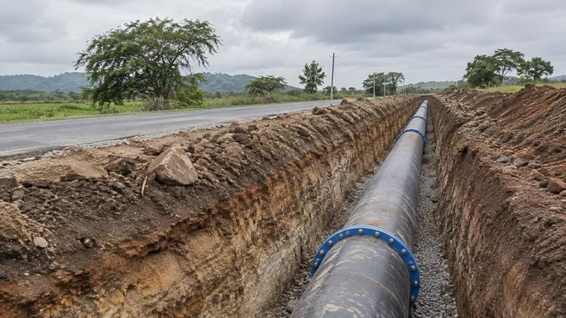
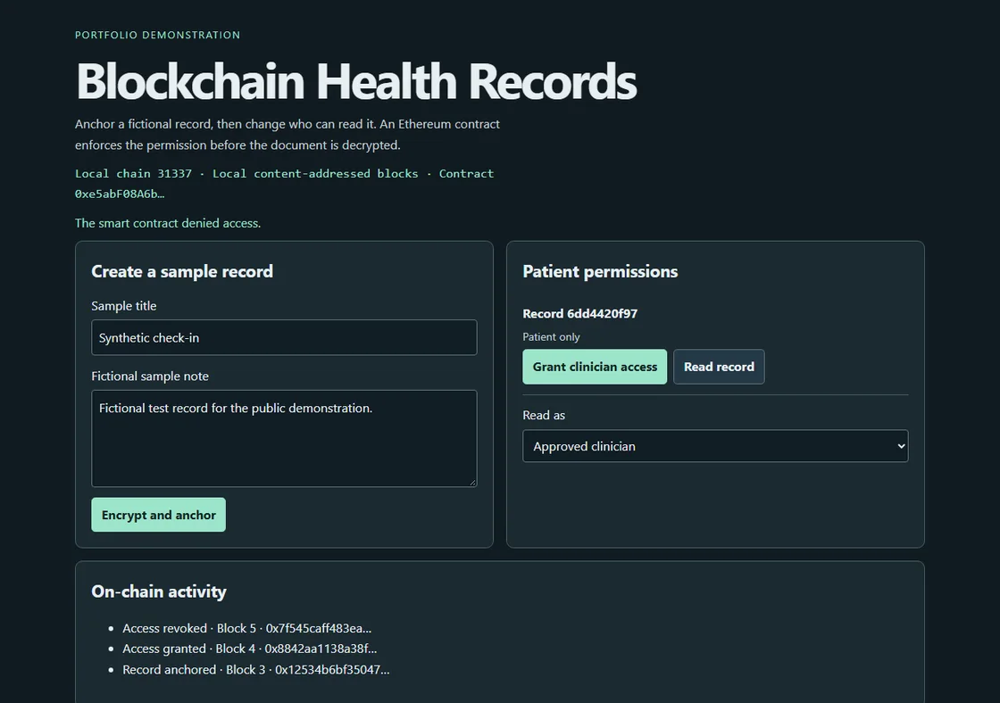

2020
Diploma in Civil Engineering
I completed my diploma at Amrutvahini Polytechnic, Sangamner, with 92.53%. For my diploma project, I studied the environmental effects of the Samruddhi Mahamarg using survey drawings, GIS and Excel.
Sangamner, Maharashtra
I started in civil engineering. Today, I build AI automation for design workflows. Walk across the bridge to see how I got here.
Use the buttons or arrow keys on the scene.
2020
I completed my diploma at Amrutvahini Polytechnic, Sangamner, with 92.53%. For my diploma project, I studied the environmental effects of the Samruddhi Mahamarg using survey drawings, GIS and Excel.
Nov 2020–Jul 2023
I worked on Jal Jeevan Mission water supply projects, first preparing estimates and reports, then supervising pipeline execution.

Nov 2020–Aug 2022Mandlik Infracon Pvt. Ltd.Data & Estimation Analyst
Aug 2022–Jul 2023KK Thorat Infrastructure Pvt. Ltd.Project Engineer2023
On site, I saw how much effort went into turning field measurements into drawings, estimates and reports. I wanted to understand how software worked and find out what computers and AI could do for problems I had seen in civil engineering.
2023–2026
At Amrutvahini College of Engineering, Sangamner, I learned by building applications and testing them with data. I graduated with a CGPA of 8.74.
Jul 2026–Present
Mandlik Infracon India Pvt. Ltd.
I build multi-step n8n workflows and develop an AI agent for internal design tasks. I use Codex to write and test supporting code, including tools that simplify repeated steps in 3D drawing workflows.
Project portfolio
Five projects across software, data science and civil engineering. Explore the work and run the public GitHub demos.
I led a team building a decentralized healthcare app that gives patients control over who can access their records.
Team lead · Jul 2025–Present
We explored how patients could manage access to a record using Ethereum permissions and IPFS-backed storage. I led the project team and contributed to the smart contracts and role-based access.
Run a local Ethereum chain, create an encrypted sample record, and switch between patient and clinician views. A patient can grant or revoke read access, and the demo checks permission before serving the record.
The portfolio demo uses fictional records and a local blockchain.

Open GitHub repositoryBuilt vendor management and product discovery, then integrated authentication, payments and image storage during my EY GDS × Edunet internship.
EY GDS × Edunet · Feb–Mar 2025
I built product discovery and vendor management in a MERN application. I added JWT authentication and access controls, integrated Stripe and Razorpay payments and Cloudinary image storage, and deployed the internship application on Vercel.
Browse a catalog, sign in as a shopper or vendor, create products and complete a demo order. MongoDB, Cloudinary and test-mode payments can be configured for integration testing.
 Open GitHub repository
Open GitHub repository
Predicted holiday booking completion for a British Airways project using travel timing and customer behavior. The résumé reports 85% accuracy and 0.90 ROC-AUC.
Applied data science · 2024
I engineered temporal and behavioral features, trained a Random Forest model to predict booking completion, and visualized the main drivers in a business-style report.
The original résumé reports 85% accuracy and 0.90 ROC-AUC. The GitHub recreation has a reproducible holdout evaluation on generated booking data and records its own results.
Open GitHub repositoryUsed transactional and demographic features to predict customer churn on a financial dataset. The résumé reports 92% accuracy.
Applied data science · 2024
I used transactional and demographic data to engineer model features, then built visualizations in Python and Power BI to show what drove churn.
The original project reached 92% accuracy as reported in my résumé. The GitHub recreation generates synthetic financial data, evaluates a separate holdout set, and exports segment summaries for Power BI.
Open GitHub repositoryStudied potential effects of the expressway on forest cover, air quality, wildlife movement and soil, then proposed mitigation measures.
Diploma research · 2020
I conducted a civil engineering study of environmental risks along the Nagpur–Mumbai expressway, using AutoCAD for survey drawings, Excel for analysis and GIS for impact zones.
The public companion includes a sourced risk register and a reproducible map of illustrative assessment locations. It documents evidence gaps for each risk and includes GIS and spreadsheet exports.
Tools & methods